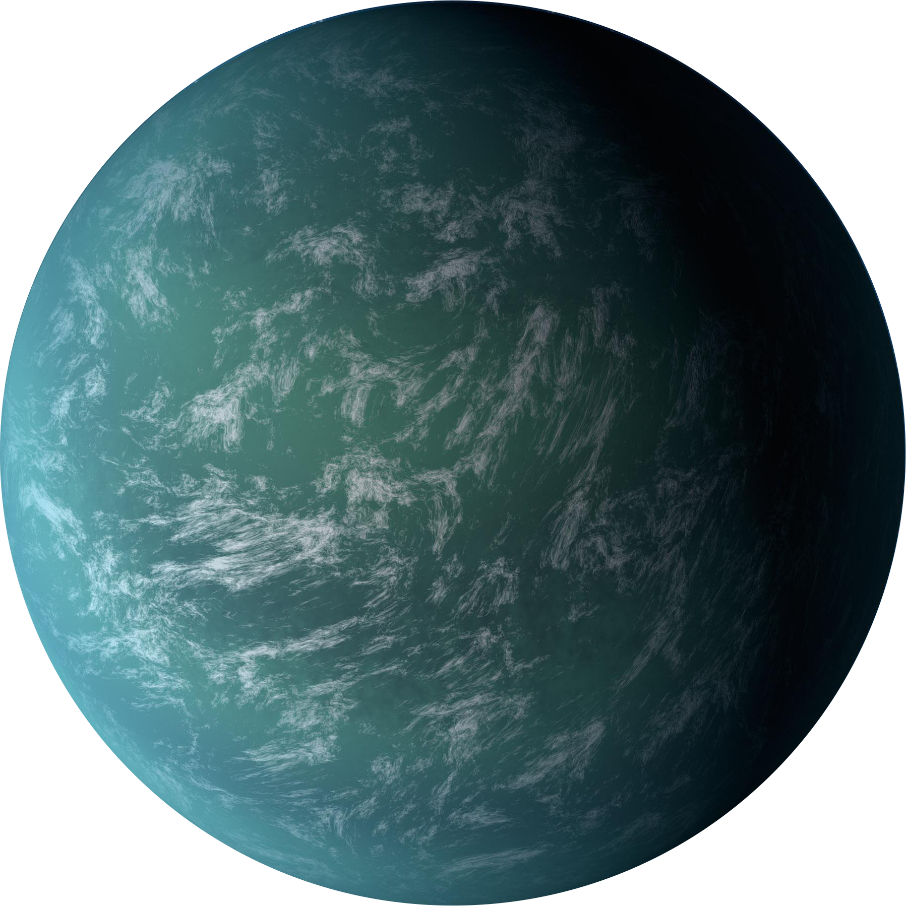

| Pros | Cons |
|---|---|
| Earth-like surface | 587 lightyears away |
| May have water | 15x more mass than earth |
How would we colonize it: We would need to invent some new FTL technology for this one again because it is 587 lightyears away from us which would take up to around 17 million years to get to with our fastest technology. This planet is in its habitable zone and scientists believe that it is a super-Earth with a rocky surface like earth, but they do not know if it has a thick atmosphere or not. It may be hard to even stand on Kepler 22b because it is about 2.4 times the size of earth and its mass is about 15x greater than earth so a person would way a lot more than they would on earth. If Kepler does have water, then we do not know if it is liquid, ice, or vapor.
